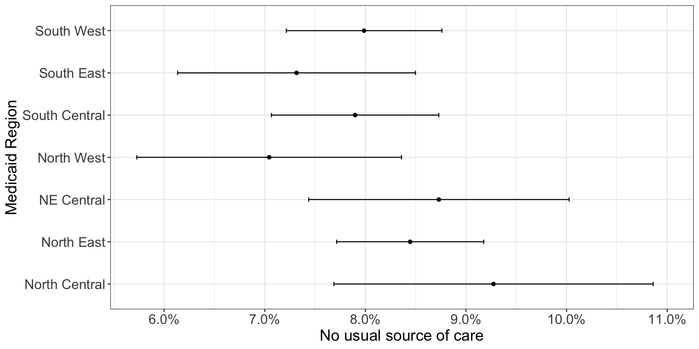
Graphing Survey Data
PUBHBIO 7225 Lecture 22
Generative AI acknowledgment: Google Gemini was used to assist in generating alt text for most images
Outline
Topics
- Some Thoughts on Data Display
Activities
- 22.1 Graphing Survey Data
Assignments
- Quiz 5 (last one!) due Thursday 11/20/2025 11:59pm via Carmen
Additional Remaining Due Dates
Group Project slides due Tuesday 12/2 (week after Thanksgiving)
Individual Project due Tuesday 12/9 (last week of classes)
Group Project paper due Thursday 12/18 (last day of finals)
Some Thoughts on Data Display
A picture is worth 1,000 words…but it’s also subjective.
Which do you prefer:
| Medicaid Region | % No Usual Source of Care | 95% CI |
|---|---|---|
| North Central | 9.3 | (7.7, 10.9) |
| North East | 8.4 | (7.7, 9.2) |
| NE Central | 8.7 | (7.4, 10.0) |
| North West | 7.0 | (5.7, 8.4) |
| South Central | 7.9 | (7.1, 8.7) |
| South East | 7.3 | (6.1, 8.5) |
| South West | 8.0 | (7.2, 8.8) |
Same data/info, different displays (both are “data visualizations”)
Each might be “optimal” in different situations / for different purposes
A Guide to Producing “Good” Data Visualizations1
Know your audience
Know the message you want to communicate (what’s the “story”?)
Consider how and where the visualization will be presented
- Oral presentation with slides
- Written paper
- Poster presentation
- etc.
The answer is not always a graph/chart! Sometimes tables are the better choice.
Accessibility considerations are important
If you remove color, is the presentation still understandable?
Is there enough contrast? Do the colors work for color-blind?
Is there alternate text available?
A Guide to Producing “Good” Data Visualizations (con’t)
Try to be consistent across visualizations if there are common elements
E.g., same line type or color for same group
E.g., same order of columns across tables
“Size, duration, complexity”
- Is the visualization easy to understand?
- Is it too much for the audience to “digest”?
- Are you providing enough context/interpretation to ensure the audience can indeed “digest” it?
Tables: A Few Tips
Provide enough information for the table to be able to stand alone separate from the document in which it is embedded
- Caption should include the what/where/who/when – make sure the data source (e.g., survey) is cited!
- Footnotes can be used to include additional information
- Caption should include the what/where/who/when – make sure the data source (e.g., survey) is cited!
Clearly label what the numbers are
- unweighted n? weighted N? weighted percentages? etc.
Be mindful of decimal places; think about significant digits
- With survey data, often we present weighted N, which are large. Use thousands separators to make big numbers readable (9274893 vs 9,274,893)
Tables: A Few Tips (con’t)
Text/number alignment matters – a neat table is easier to read than a messy one
Please don’t use vertical lines in your tables (but do use horizontal ones, appropriately)
Comparisons are easiest to make vertically (though this is not always achievable)
Vertical comparison:
| Smoking Status | % No Usual Source of Care |
|---|---|
| Current | 11.3 (10.4, 12.2) |
| Never/Former | 7.2 (6.8, 7.6) |
Horizontal comparison:
| Characteristic | Current Smoker | Never/Former Smoker |
|---|---|---|
| % No Usual Source | 11.3 (10.4, 12.2) | 7.2 (6.8, 7.6) |
Graphs/Charts: A Few Tips
Analyzing complex survey data? Always show weighted data!
What you are trying to show with the graph? Let this inform your choice of graph.
Distributions
Comparisons (between groups, within a group, over time, etc.)
Correlations / Associations
Use colors to improve data display, not just for the sake of using color (remember: accessibility)
Avoid 3-D or other “fancy” stuff – simpler/cleaner is usually better
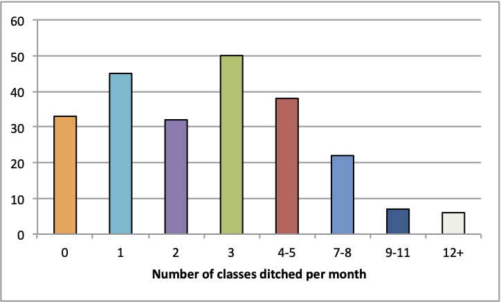
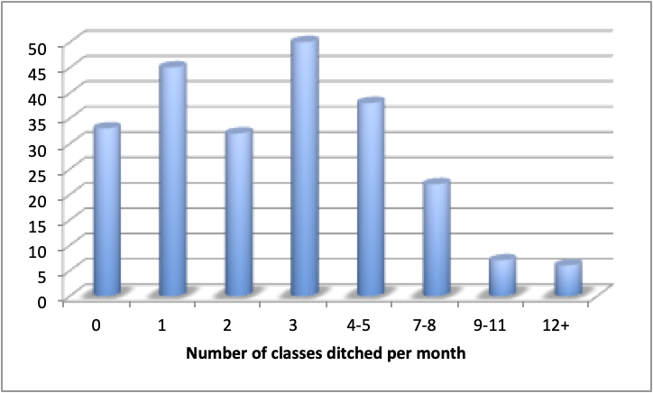
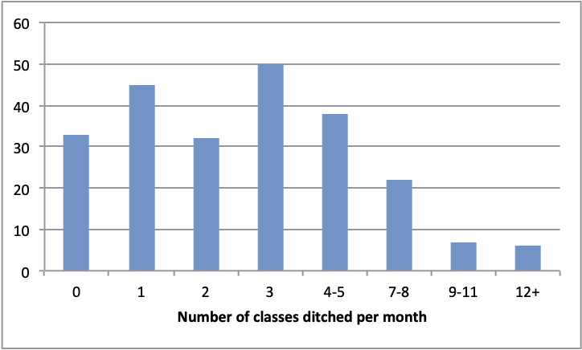
Graphs/Charts: A Few Tips (con’t)
- Ensure text – axis labels, tick marks, legends, etc. – is readable (and big enough if in a slide presentation)
Default font sizes
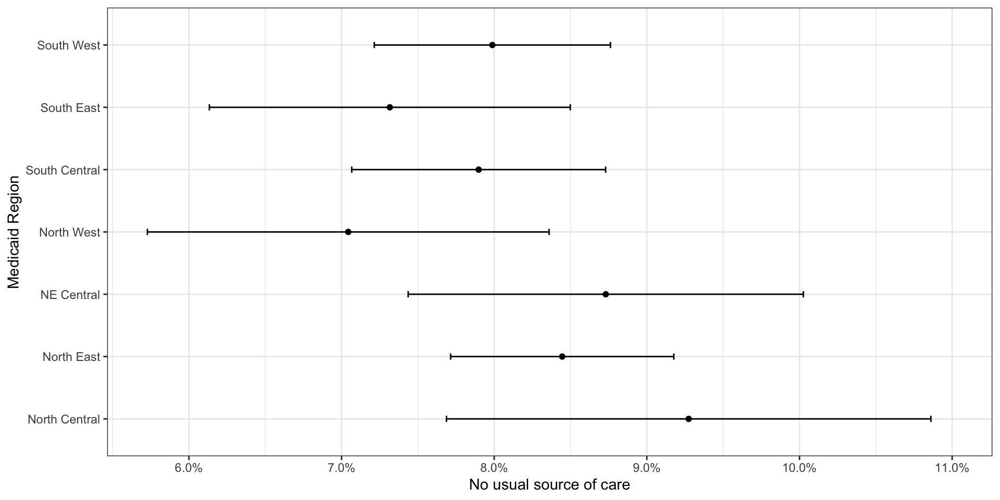
Increased font sizes

Seems obvious, but don’t make a misleading chart!
You don’t have to make the graph in the same software you used to do the analysis! Taking estimates from Stata/R and making a plot in Excel is fine (maybe don’t use the default graph settings).
(Some) Types of Charts Useful for Survey Data
Histograms
Used to show the distribution of a continuous/semi-continuous/discrete variable
Weighted versions can be made easily with software
Generally more useful than boxplots for survey data
- Discrete nature of (a lot of) survey data renders a boxplot less appealing
Scatterplots
Used to show relationship between two continuous/semi-continuous/discrete variables
Weighted versions can be made with software
- Size of dot = weight (“bubble plot”)
(Some) Types of Charts Useful for Survey Data (con’t)
Bar Charts
Show the amount of something – counts (frequencies) or percentages
Should not be used to show means! (“dynamite plots” are bad)
Clustered or Stacked bar charts can be used to show comparisons
- Can sometimes be complicated/hard to interpret
Bars can be vertical or horizontal (horizontal = good for long category labels)
Weighted versions straighforward – plot the weighted estimates
Points and CI Bars
Show means (or proportions) with CIs (or +/- SE)
Easy to show comparisons across groups
Weighted versions straighforward – plot the weighted estimates
Some Examples (from 2017 OMAS)
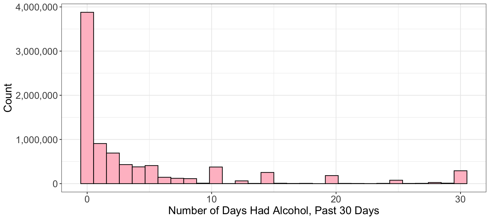
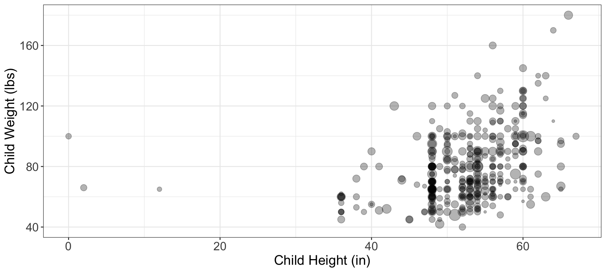
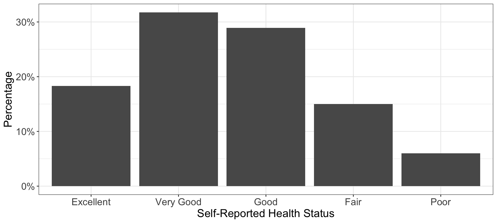
![A dot plot showing the percentage of people with no usual source of care, broken down by Medicaid region and smoking status. The x-axis represents the percentage of people with no usual source of care , while the y-axis lists the Medicaid Regions. The plot shows two points for each region: one for 'Current' smokers (orange circles) and one for 'Never/Former' smokers (blue triangles). Horizontal lines extending from each point represent confidence intervals. The North Central and NE Central regions have the highest percentage of people with no usual source of care, particularly among current smokers.](PUBHBIO7225_L22_graphs_files/figure-revealjs/unnamed-chunk-8-1.png)
Statisticians’ Least Favorite Chart Type1
- The dreaded pie chart:
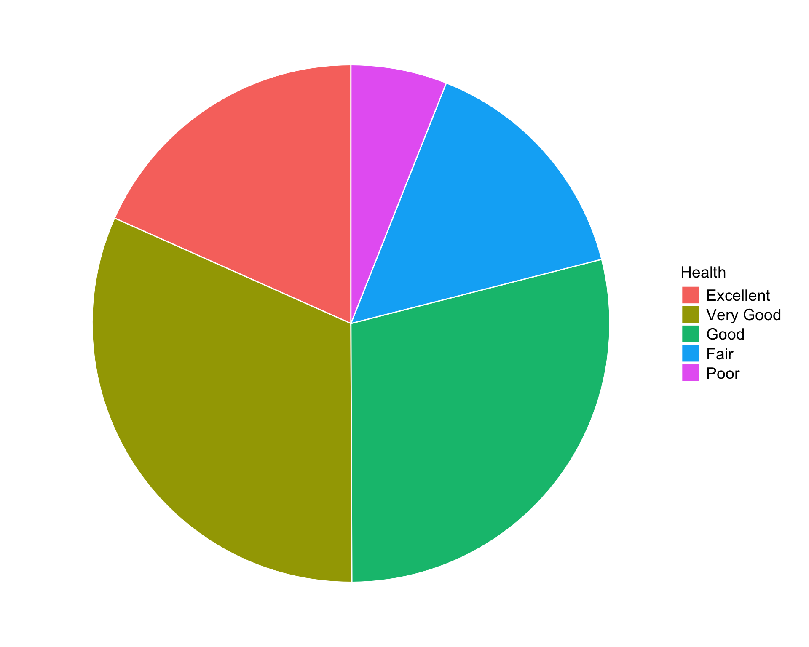
You can’t even tell which pie slice is biggest!
Some people “fix” this by adding the %s – but then what is the point of the plot?
- Seriously though – please don’t make pie charts.
Give Me Your Thoughts On These (Real) Data Displays
- From an article undergoing peer review:
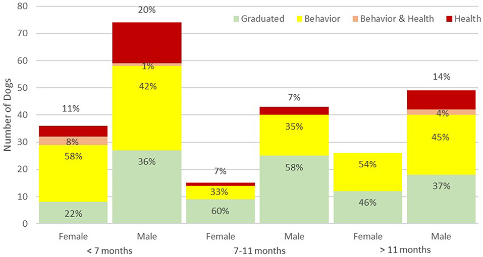
Give Me Your Thoughts (con’t)
- From a published article in a peer-reviewed journal:

Give Me Your Thoughts (con’t)
- What an instructor sees when checking on their SEI response rate:
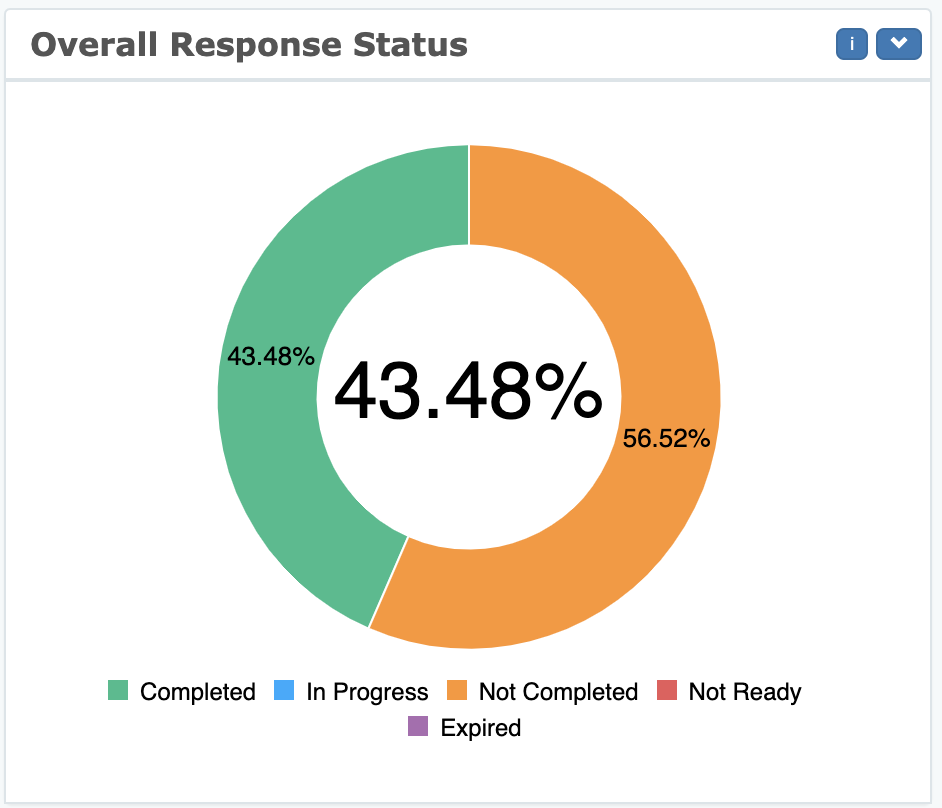
Give Me Your Thoughts (con’t)
From the GA Department of Public Health’s website during COVID pandemic:
Explanatory text (above the chart): The chart below presents the number of newly confirmed COVID-19 cases over time. This chart is meant to aid understanding whether the outbreak is growing, leveling off, or declining, and can help to guide the COVID-19 response.
Day 1
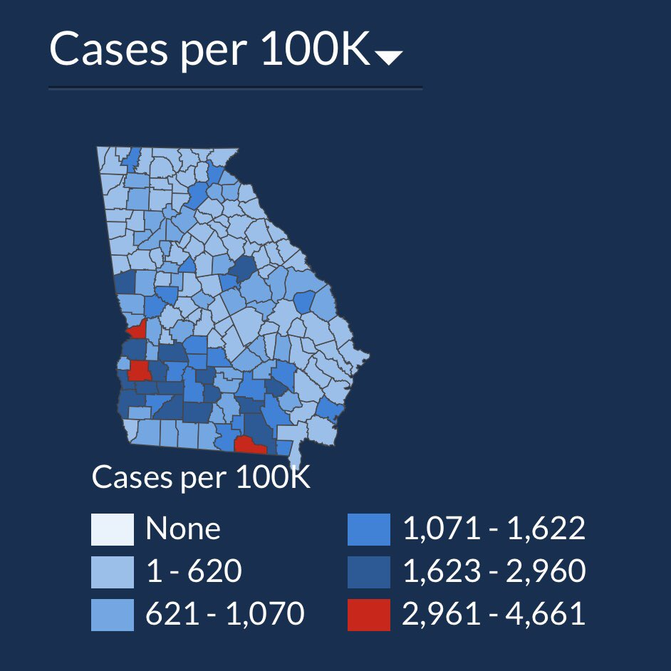
Day 2
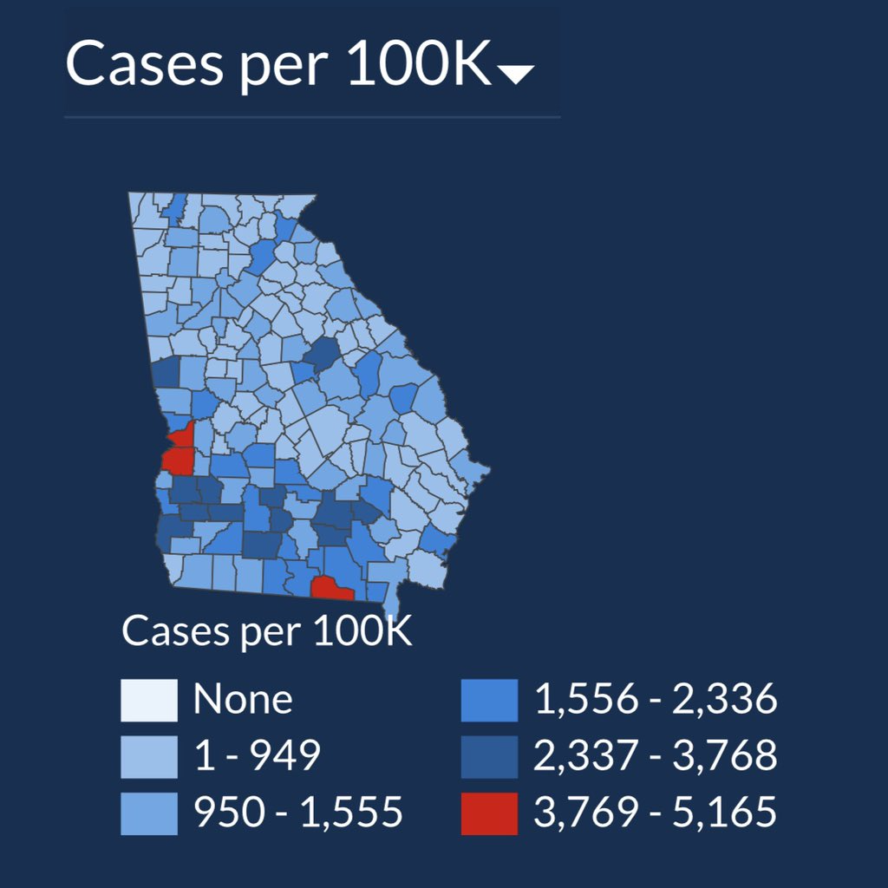
Final Thoughts on Charts/Graphs
Graphs/charts…
are attention-grabbing (whether good or bad!)
are often (always?) useful for presentations
- Tip: sometimes graphs that work well in a paper need to be modified for presentation on slides/poster
are harder to make (well) than you’d think
show up in PubMed abstracts!
naturally display numerical results less precisely than a table
are not always the best choice for data display (tables are useful!)
can be fun to make, but also time-consuming (especially for perfectionists)
Final Thoughts (con’t)
- I don’t expect perfect tables and graphs for your project, but there are components of the rubrics devoted to data display. For example:
| Criterion | Poor (0.5 points) | Good (0.75 points) | Excellent (1 point) |
|---|---|---|---|
| Tables – quality | Tables do not convey important or interesting information and contain many errors/incorrectly calculated statistics | Tables provide some important information but not entirely clear why some of them are included and/or contain some statistics that appear incorrectly calculated | Tables convey important information supporting the “story” of the paper and contain appropriately calculated statistics |
| Figures – quality | Figure(s) does not display information in a meaningful way and/or not explained well and/or contains statistical errors | Figures(s) are hard to understand/not explained well or have calculation errors, but attempt to display information important to the paper’s “story” | Figure(s) display information in a meaningful way, add to the “story” of the paper, are explained well, and contain appropriately calculated statistics |
Activity 22.1
Graphing Survey Data
PUBHBIO 7225